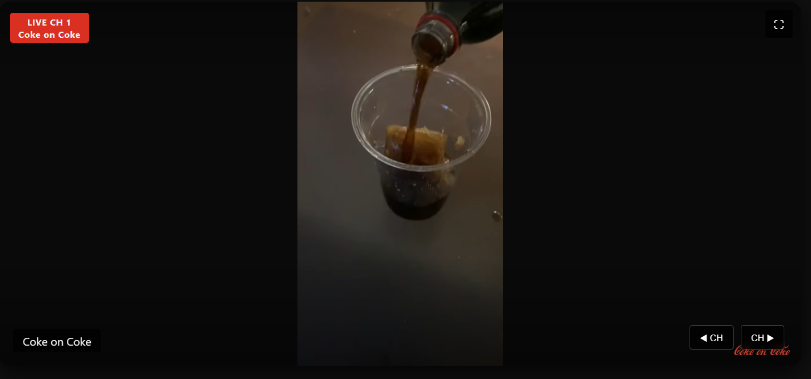

| Coke on Coke | |
|---|---|
|

Coke on Coke on SusFeed Video TV.
|
|
| Type | Video |
| Created | 2022 |
| Creators | Cameron Impostor, PBGMidi |
| Platform | YouTube, SusFeed Video |
Coke on Coke is a video of Cameron Impostor and PBGMidi pouring liquid Coca Cola onto ice cubes made of Coca Cola, hence the name Coke on Coke. The video is notable for being the first on SusFeed Video and one of the inspirations for SusFeed.
In January 2022, The Boys were in The Schlobby reading up on psychology papers. PBGMidi found a paper on the mentally disabled and independant living, titled "Small Homes: A Case Study of Westport Associates." by Douglas Biklen. The article contained the following exchange during a barbecue:
The Boys started quoting this article regularly, calling it the "Coke on Ice Conversation", leading to various memes on the matter. Eventually, it was boiled down to being fully about coke:
This led to Coke on Coke becoming a meme, which spread around Elizabethtown College for a bit. Then, in February 2022, The Boys realized one could freeze coke to create coke on coke, leading to the setup for the video.
The video contains Cameron Impostor and PBGMidi pouring coke on coke. The video starts with Cameron saying "Ladies and gentlemen...", with anticipation building. PBGMidi then pours the coke on the coke, with Cameron then saying "Coke on coke.". The video then ends.
Coke on Coke is the first video produced by SusFeed, and is widely credited as the video that caused the creation of SusFeed Video. The video has been viewed millions of times, and has spawned its own channel, Channel 1, on SusFeed Video. When asked if he would do a sequel, Pepsi on Pepsi, Cameron said: "Idk, maybe".
{kind=link}